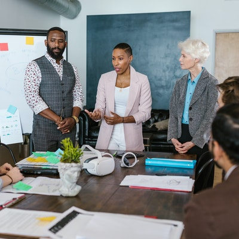

|  |
Jospehine County Equity GroupHome Page About Us Programs Resources Get Involved Contact Us |
Our mission is to promote an inclusive and equitable Josephine County through education, advocacy, and community building. We aim to advance societal and structural change that supports diverse communities. We are a nonpolitical organization that partners with individuals, groups, agencies and institutions towards community-wide impact.
A community in which all people have access to their basic needs, are ensured their human rights, live with dignity and respect, and are offered equitable opportunities to thrive.
For 2021, The Equity Project has strategically chosen to lead with the issues of race and housing. We provide communications and networking support to existing groups and organizations addressing these issues in Josephine County, connect individuals to opportunities for learning and action, as well as help new action groups form.